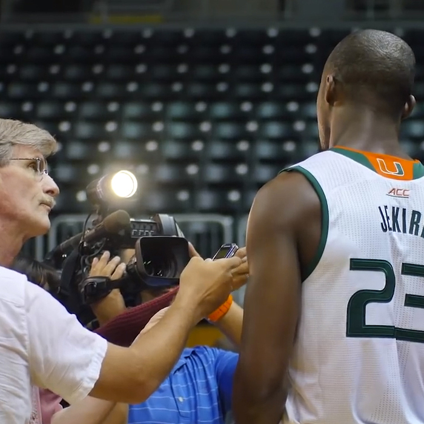
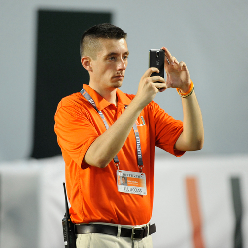
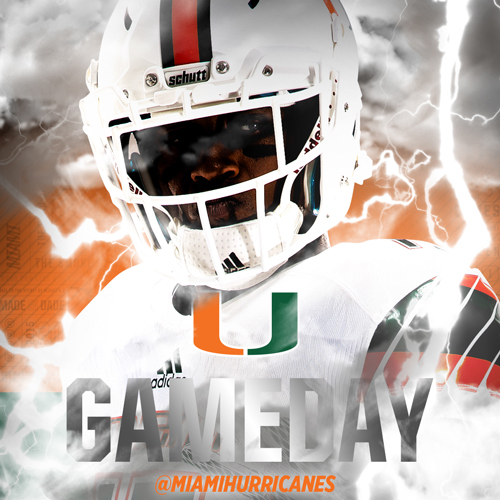
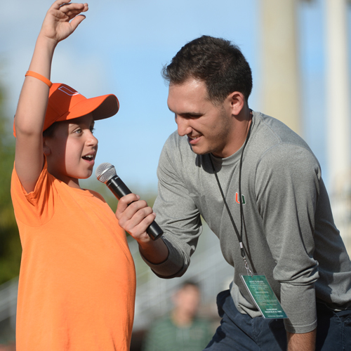
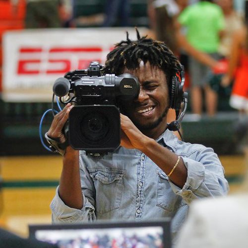

About
Communications
The athletic communications internship gives students a unique opportunity to gain media relations experience on the forefront of a national brand. Interns are given real world tasks and get their work published on HurricaneSports.com.
The athletic communications department is seeking hard-working individuals interested in pursuing a career in media relations. Qualified applicants may have or be pursuing a degree in communications, public relations, sport administration, journalism or related fields.
Duties may include
- Assisting with communication facets of all sports
- Attending and working home games
- Writing press releases
- Updating student-athlete biographies
- Updating web content on HurricaneSports.com
- Conducting interviews with student-athletes and coaches
- Handling media credential requests and distribution
- Updating statistical archives
- Other duties as assigned
Preffered Skills
- Professional experience in communications, public relations, journalism or sport administration
- Excellent communication skills
- Microsoft Word and Excel
- Adobe InDesign
- Working knowledge and understanding of NCAA rules
Digital Strategy
The digital strategy internship gives students the chance to join one of the most elite digital departments in all of college athletics. Interns will get hands-on experience with a social media team recognized as one of the top 10 in college football by USA Today in 2015.
The digital strategy department is seeking diligent individuals interested in pursuing a career in digital and social media marketing. Qualified applicants may have or be pursuing a degree in electronic media, marketing, advertising, sport administration or related fields.
Duties may include
- Assisting with the management of digital assets for all sports
- Developing social media content across several platforms including Facebook, Twitter, Instagram, Snapchat, Pinterest, Vine and YouTube
- Identifying emerging social and digital media trends and technologies
- Updating web content on HurricaneSports.com
- Assisting with e-mail marketing campaigns
- Providing customer service on social media channels
- Brainstorming ideas to increase fan engagment and drive revenue to the organization through digital platforms
- Using social media analytics software to evaluate the performance and effectiveness of digital campaigns
- Other duties as assigned
Preffered Skills
- Professional experience in digital media, social media, marketing, advertising or sport administration
- HTML, CSS, JavaScript or other web design experience
- Basic video editing skills in Adobe Premiere Pro
- Basic understanding of Adobe Photoshop and Illustrator or other graphic design experience
- Working knowledge and understanding of NCAA rules
Graphic Design
The graphic design internship gives talented visual design students a chance to showcase their creative skills on the big stage. Interns are tasked with parts of the creative executions of all sports and get their work displayed to millions of Canes fans.
The creative services department is seeking diligent individuals interested in pursuing a career in graphic design. Qualified applicants may have or be pursuing a degree in graphic design, art, creative advertising or related fields.
Duties may include
- Assisting with the creative content development of all sports
- Developing graphics, templates and infographics for use on social media and HurricaneSports.com
- Designing items for print including signage, magazine covers and flyers
- Creating print and web advertisements
- Assisting with the establishment of brand identity and ensuring brand consistency throughout all visual elements
- Working with other departments within athletics to ensure creative executions are brand consistent
- Brainstorming other creative ways to display content and information visually
- Other duties as assigned
Preffered Skills
- Professional experience in graphic design, art or creative advertising
- Strong ability in Adobe Creative Suite, especially Photoshop and Illustrator
- Some HTML, CSS, JavaScript, jQuery, ASP or other web design experience
- Experience in Adobe Premiere Pro or After Effects is a plus
- Working knowledge and understanding of NCAA rules
Marketing
The marketing internship gives students the chance to join Miami's NACMA award-winning marketing team. Interns will assist with the execution of the department's marketing strategy through promotions and fan engagement.
The marketing department is hiring both gameday and office & event interns. Qualified applicants may have or be pursuing a degree in marketing, advertising, sport administration or related fields.
Duties for gameday interns may include
- Attending and working home games
- Participating in grassroots marketing to engage and create buzz and a general awareness of Miami athletics events in the community and on campus
- Assisting with the implementation of gameday promotions and in-game sponsorship elements to enhance gameday atmosphere and fan experience
- Providing customer service, managing interactive fan zone areas, organizing giveaways and assisting with set-up/break down of events
- Assisting the department with community relation events alongside athletic department employees, student-athletes and members of the community
- Expected time commitment is 10-12 hours per week
- Other duties as assigned
Duties for office interns may include
- All of the responsibilities of gameday interns in addition to the following
- Assisting with the implementation of the annual marketing plans for assigned sports programs with a focus on increasing attendance and game atmosphere/fan experience in order to generate revenue
- Conducting research to be implemented into future marketing plans
- Distributing collateral materials
- Assisting with the operations of the community relations efforts including fulfilling donation, appearance, and autograph requests and the operation of the Future Canes & Jr. Canes programs
- Expected time commitment is 8-10 hours per week plus gameday event hours
- Other duties as assigned
Preffered Skills
- Professional experience in marketing, advertising or sport administration
- Previous experience working with a marketing street team or promotions staff
- Microsoft Office, especially Word and Excel
- Strong interpersonal skills
- Working knowledge and understanding of NCAA rules
Video Production
The video production internship gives students the opportunity to work in the department's brand new $1 million state-of-the-art video control room to produce ESPN3 broadcasts. Interns will also produce content and features for UM's website, social media and video board.
The video department is looking for hard-working individuals with a passion for video. Qualified applicants may have or be pursuing a degree in electronic media, broadcast journalism, creative advertising, motion pictures or related fields.
Duties may include
- Assisting with the production of ESPN3 telecasts in a variety of roles including director, graphics operator, audio mixer, replay operator and camera operator
- Shooting home games, practices, press conferences, community events and video shoots as assigned
- Editing highlight packages, feature stories, hype videos and other video pieces for use on HurricaneSports.com, CanesAllAccess YouTube channel and social media
- Creating promotional content for use on in-venue video board
- Other duties as assigned
Preffered Skills
- Professional experience in video production, electronic media, broadcast journalism, creative advertising or motion pictures
- Strong editing skills in Adobe Premiere Pro and After Effects
- Previous experience shooting video with professional equipment
- Previous experience in a television control room or production truck
- Working knowledge and understanding of NCAA rules